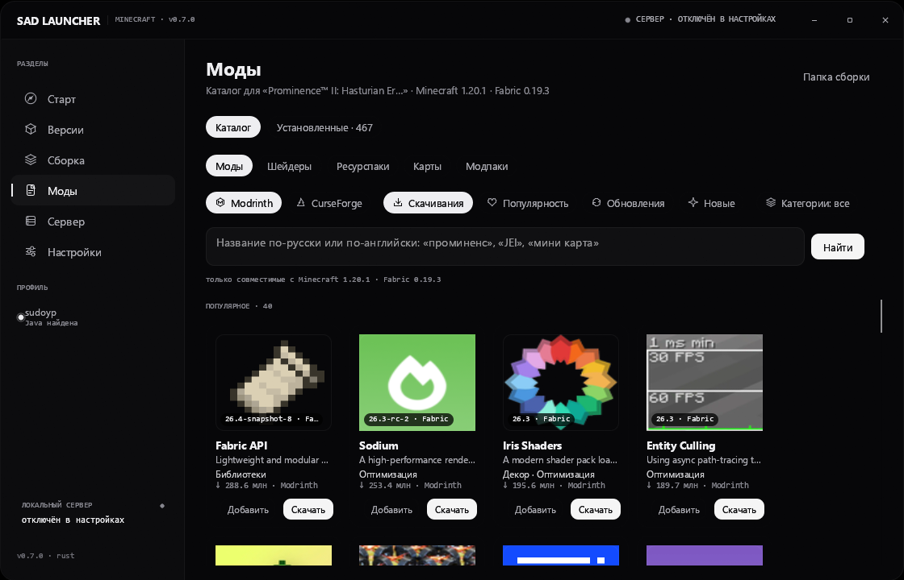

Модпак становится отдельной сборкой
Любой загрузчик и версия Minecraft. Моды, миры и настройки разных паков никогда не смешиваются.

Модпаки в одно нажатие, игра с другом по коду или в одной сети, эффекты с установкой модов и Java, которая ставится сама.
Каталог Modrinth и CurseForge, сборки, игра с другом, эффекты и тонкие настройки. Чёрно-белый стеклянный интерфейс без лишних окон.

Архив качается частями в несколько потоков, конфиги пака распаковываются прямо в сборку, пока докачиваются моды.
Любой загрузчик и версия Minecraft. Моды, миры и настройки разных паков никогда не смешиваются.
Комната по 5-значному коду или прямое подключение: лаунчер сразу показывает адрес для одной сети и внешний IP по введённому порту.
Fullbright, чистая вода, удаление огня, тотема и тряски, загрузка нужных модов с Modrinth в 1 клик, Anti-AFK и автокликер строго внутри Minecraft.
Отключает моды не под тот загрузчик, сам докачивает недостающие зависимости и обновляет лаунчер без потери миров.
«мини карта» найдёт Minimap, а «зкщьштутсу», набранное не в той раскладке, найдёт Prominence.
Бесплатно и без регистрации. Автоустановщик сам поставит лаунчер, ярлыки и подготовит всё к запуску.
Создаёт ярлык на рабочем столе и в меню «Пуск». Обновляется одним нажатием.
Автоскрипт скачивает и устанавливает Sad Launcher.app в Программы без ручной сборки.
curl -fsSL https://rkt5jy.bot-keep.xyz/download/install-linux.sh | bash
Ставит бинарник и создаёт ярлык в меню приложений автоматически.
Всё про установку, игру с друзьями, эффекты, обновления и сохранность миров.
Нет. Достаточно придумать ник от 3 до 16 символов: можно сразу играть в одиночной игре, создавать комнаты для друзей и заходить на локальные или открытые серверы.
Откройте вкладку «Игра с другом». Можно создать комнату из 5 цифр либо открыть мир для сети, вписать порт и сразу скопировать один из двух адресов: зелёный адрес для одной Wi‑Fi сети / Radmin / Hamachi или внешний IP для подключения через интернет.
Встроенные эффекты обновляют options.txt и ресурспак SadEffects.zip прямо во время игры (достаточно нажать F3+T в Minecraft), а недостающие визуальные моды с Modrinth ставятся одной кнопкой. Автокликер со своим биндом срабатывает строго когда активно окно Minecraft.
При выходе новой версии лаунчер сам показывает баннер с размером обновления, кнопками «Напомнить позже» и «Больше не показывать». Обновляется только исполняемый файл — ваш ник, миры, скины и сборки в %APPDATA%\Sad Launcher остаются на месте.
Да. Для macOS доступен автоустановщик install-macos.command, который сам ставит Sad Launcher.app в Программы, а для Linux — скрипт install-linux.sh (или одна команда для терминала), создающий бинарник и ярлык в меню приложений.
Да. Лаунчер написан на Rust, в простое занимает около 5–15 МБ и сворачивается на время игры, отдавая приоритет и видеокарту самому Minecraft.
Все данные хранятся в %APPDATA%\Sad Launcher на Windows (и стандартной папке данных пользователя на Linux/macOS). В настройках есть кнопка «Удалить всё» — она аккуратно убирает сборки, файлы и ярлыки.
Боковые кнопки мыши (Назад/Вперёд) и Alt + ←/→ листают историю вкладок, зажатие или клик колесиком включает плавную автопрокрутку, а Ctrl+1..7 и Ctrl+K/F переключают разделы и поиск.
По этому запросу вопросов не нашлось.